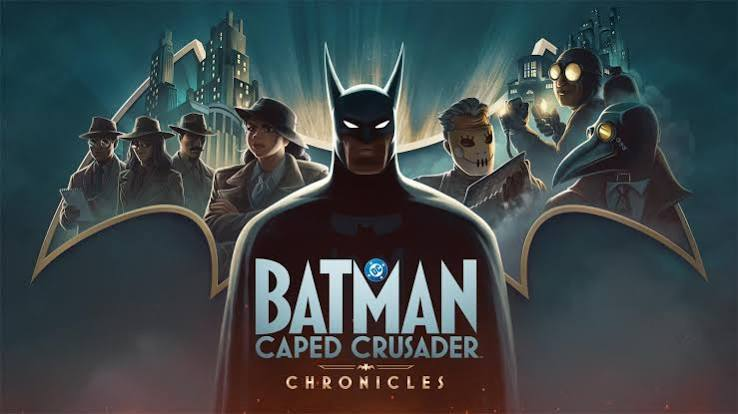

Quem é o Batman?

Batman, também conhecido como Bruce Wayne, é um vigilante mascarado que protege Gotham City. Sem superpoderes, ele usa sua inteligência, habilidades de combate e tecnologia avançada para combater o crime.
Desde sua primeira aparição em 1939, o Batman se tornou um dos heróis mais icônicos da cultura pop, estrelando quadrinhos, filmes, séries e jogos.